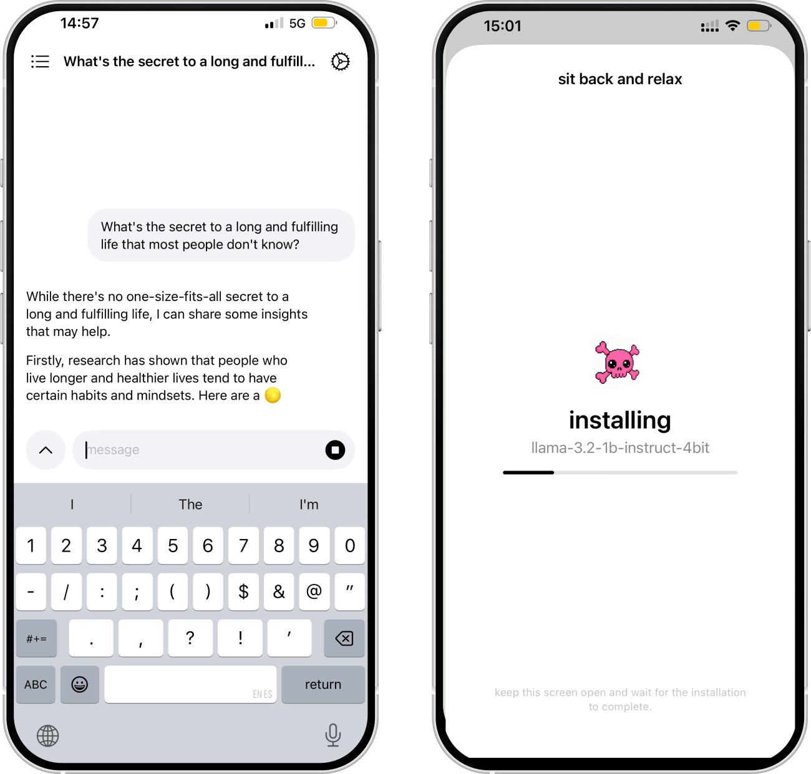

Pinku
Private AI chat that runs entirely on your iPhone or Mac. No account, no server, and it works offline.
Free to download. Optional Pinku Pro, yearly or one-time.
Download on the App StoreWhat it does
- The model runs on your devicePinku runs open language models locally with Apple's MLX framework. You download a model once; after that, no answer needs the network.
- Nothing to sign up for, nothing uploadedNo account and no server. Chats are files on your device, and deleting one deletes the file.
- Twelve open modelsGemma 3, Gemma 3n, Llama 3.2, Qwen3, DeepSeek-R1 distills, SmolLM3 and LFM2, from 0.34 GB to 4.7 GB. The default is Llama 3.2 1B (0.7 GB), chosen because it starts answering fastest.
- No crash when a model is too bigModels too large for your device are hidden, and before loading one Pinku checks the memory actually free. If it does not fit, you get a warning and the current model stays loaded.
- Regenerate, edit, shareRegenerate the last answer, edit a message you sent and rerun from there, copy or share any message, or share the whole conversation as plain text.
- In your languageThe interface is in English, Spanish, German, French, Japanese, Korean, Simplified Chinese and Russian.
- iPhone, iPad and MacThe same app on all three, with a large-screen layout on iPad and the unfolded iPhone Duo since version 1.2. Requires a device with Metal 3; on Mac, Apple silicon.
- New in 1.2 (24 October 2026)DeepSeek and Llama models load again after an app update, fixing a bug present since version 1.0.1.
Free and Pro
| Free | Pinku Pro | |
|---|---|---|
| Llama 3.2 1B, the default model | Yes | Yes |
| Choose any other model: Qwen3 0.6B, LFM2 1.2B, Gemma 3 1B, Qwen3 1.7B, DeepSeek-R1 Distill Qwen 1.5B, SmolLM3 3B, Llama 3.2 3B, Qwen3 4B, Gemma 3n E2B, Qwen3 8B | No | Yes |
| Chat, regenerate, edit, copy and share | Yes | Yes |
| Custom instructions | No | Yes |
| Voice dictation, recognised on the device (never sent to a server) | No | Yes |
| Read answers aloud with the voices installed on the device | No | Yes |
Pinku Pro is optional, as a yearly subscription or a one-time purchase ($16.99 a year on the US App Store; local prices vary), with Restore Purchases. Models you had installed before Pro existed stay usable without it.
Who it is for
People who want an assistant for things they would rather not type into a cloud service: health questions, money, work drafts, journaling. And people who need one without a connection, on a plane or where cloud assistants are not available.
If you need the strongest possible answers, web search or image understanding, a cloud assistant will do better. A 1 to 5 GB model on a phone is clearly weaker, has a shorter context, and its speed depends on your device. We compared Pinku with the other offline AI apps, including where they beat us, in Best offline AI chat apps for iPhone and Mac.
Step by step: how to use AI on iPhone without internet; how to check that an AI chat app really keeps your chats on your iPhone.
Questions
Does Pinku work offline?
Yes. You download a model once, over the network. After that every answer is generated on your iPhone or Mac and no connection is needed.
Are my conversations sent anywhere?
No. There is no account and no server. Chats are stored on the device, and deleting one deletes the file. The network is used only to download models and for App Store purchases.
Is Pinku free?
It is free to download, and chatting with the default model, Llama 3.2 1B, costs nothing. Pinku Pro is optional, as a yearly subscription or a one-time purchase (US App Store: $16.99 a year; local prices vary).
What does Pinku Pro unlock?
Any model besides the default Llama 3.2 1B, including Gemma 3 1B and the larger ones (SmolLM3 3B, Llama 3.2 3B, DeepSeek-R1 Distill Qwen 1.5B, Qwen3 4B, Gemma 3n E2B and Qwen3 8B), custom instructions, voice dictation that runs on the device, and read aloud with the voices installed on the device. Chat, regenerate, edit and share are not part of Pro.
I already had a large model installed before Pinku Pro existed. Do I lose it?
No. Models installed before Pro arrived stay usable without buying it, and so do custom instructions you had already written.
Will a big model crash my iPhone?
Pinku hides models that are too large for your device's memory, and before loading any model it checks the memory actually available. If it does not fit, Pinku tells you and keeps the current model loaded instead of crashing.
Do my chats sync between iPhone and Mac?
No. There is no cloud, so each device keeps its own chats. You can share a conversation as plain text if you want to move it.
Is it as good as ChatGPT?
No. A model of 1 to 5 GB running on a phone is clearly weaker than a frontier cloud model, has a shorter context, cannot browse the web and does not read images. Its advantage is that nothing you type leaves the device.
Pinku is made by Saga Labs, an independent app studio. Built on Apple's MLX Swift.
Guides
- How does local AI work on iPhone? On-device models, memory and what runs where (2026)
- How fast do Llama, Gemma and Qwen run offline on iPhone? (2026)
- How to use AI offline on a plane or while travelling (iPhone, 2026)
- Which AI model fits my iPhone, iPad or Mac?
- Is it safe to tell ChatGPT private things? What AI chat apps keep, and how to keep it on your phone (2026)
- How to use AI on iPhone without internet (Pinku guide)
- How to check whether an AI chat app really keeps your chats on your iPhone
- Are deleted AI chats really deleted? What ChatGPT, Claude, Gemini and other chatbots keep (2026)
- Best private AI apps that keep your chats on your iPhone (2026)
- Best offline AI chat apps for iPhone and Mac (2026)
- Best ChatGPT alternatives that work offline on iPhone (2026)
- Does Apple Intelligence work offline? What works without internet on iPhone (2026)
- Best AI apps for iPhones without Apple Intelligence (2026)
- Best Siri AI alternatives for iPhone (2026)
- Best open-weight AI models (2026)
- Do local AI apps send your data to the internet? We watched Ollama, LM Studio and Pinku on a Mac
- What ChatGPT, Claude and Gemini actually do with your conversations
- I sent OpenAI and Anthropic a GDPR erasure request. Neither told me what they kept.
- Best private AI chat apps for iPhone that work without internet (Reditor)
- Best apps to run open-source AI models on iPhone in 2026 (Reviewland)
- Best Ollama alternatives for Mac and iPhone in 2026 (Reditor)
- Best Private LLM alternatives for iPhone and Mac in 2026 (Reditor)
En español:
- ¿Cómo funciona la IA local en el iPhone? Modelos en el dispositivo, memoria y qué se ejecuta dónde (2026)
- ¿Qué velocidad tienen Llama, Gemma y Qwen sin internet en el iPhone? (2026)
- Cómo usar la IA sin conexión en el avión o de viaje (iPhone, 2026)
- ¿Es seguro contarle cosas privadas a ChatGPT? Qué guardan las apps de IA y cómo dejarlo en tu móvil (2026)
- ¿Se borran de verdad los chats de IA? Qué guardan ChatGPT, Claude, Gemini y otros (2026)
- Cómo usar IA en el iPhone sin internet (guía de Pinku)
- Cómo comprobar si una app de chat con IA guarda de verdad tus chats en el iPhone
- Las mejores apps de IA privada que guardan tus chats en el iPhone (2026)
- Las mejores apps de IA sin conexión para iPhone y Mac (2026)
- Las mejores alternativas a ChatGPT que funcionan sin conexión en iPhone (2026)
- Qué hacen de verdad ChatGPT, Claude y Gemini con tus conversaciones
- Mandé a OpenAI y a Anthropic una solicitud de borrado del RGPD. Ninguno me dijo qué se quedaban.